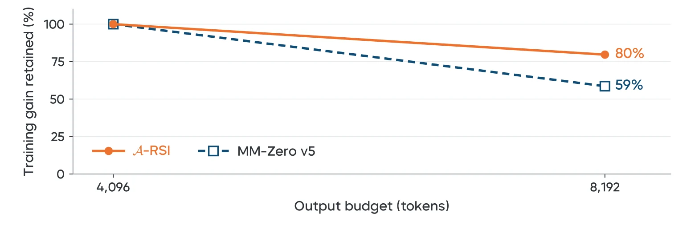

Zero-data · Multimodal · Recursive self-improvement
A-RSI
Adaptive Task Refresh for Zero-Data Multimodal Self-Improvement
*Equal contribution · §Project lead · †Corresponding authors


Active task pool
Solver · GRPO
Saturation detector
Abstract
Knowing what to learn is half the problem.
Knowing when to stop learning it is the other half.
Recursive self-improvement requires models not only to acquire useful training experience, but also to decide when their current experience has ceased to be useful. Existing methods often focus on what experience to generate next, while paying less attention to when fresh experience should be introduced. Many also construct training targets through self-consistency or majority voting, making supervision depend on the model's own uncertain predictions.
We address these two questions separately: training dynamics determine when to acquire new experience, while the answers to new tasks remain independently checkable. A-RSI monitors reward variation and accuracy in training logs to refresh a task pool when its learning signal declines, without consulting validation or test scores. A static library of model-authored programs produces multimodal questions and derives their reference answers; we specify the task-generation contract, automatically verify chosen properties of the reward and refresh rules, and separately audit the generated answers. The training loop uses no external training examples or human-written answer labels. On the primary eleven-benchmark suite, A-RSI raises the performance average from 57.77 to 61.05 with 800 fresh tasks.
Overview
Two questions.
Two independent sources of truth.
A system can keep spending updates on a pool whose learning signal has declined, while refreshing too often consumes new tasks it may not need. And when training targets come from votes, the model's own errors become the labels for its next update. A-RSI separates the two decisions.
When should fresh experience come in?
Prompts whose sampled responses receive different rewards are the ones still teaching. A-RSI counts them in its own GRPO logs, together with logged accuracy, and refreshes the whole pool when that signal declines.
What is the right answer to a new task?
A fixed library of model-written programs builds each image, question, and reference answer from one sampled configuration. The answer is computed, not voted, and can be recomputed by an independent solver.
Programmatic experience
Geometry, chart, table, and counting templates are written once by the base model and frozen. Replacement tasks need no further model call for their questions or answers.
Log-triggered refresh
After each accepted window the controller compares the signal with two windows earlier. A drop below 85% or a 10-point accuracy rise swaps in a prepared, unused pool; the weights carry on.
Gains that survive audits
A score can rise because more answers finish inside the output budget, or because finished answers get corrected. A-RSI reports the two separately and audits its own data and rewards.

Overview of A-RSI. Task templates, the candidate reservoir, and replacement pools are fixed before training. The controller reads training logs to decide when to activate a fresh pool; only the Solver policy is optimized.
Why the timing question matters
Reusing a pool can stall learning, while fewer truncations can raise accuracy without any better reasoning. A-RSI lets training logs guide refresh, and audits responses to tell completion apart from error correction.

Motivation. (a) Pool reuse can stall learning, while fewer truncations can raise accuracy. (b) Training logs guide refresh, and response audits distinguish completion from error correction.
Interactive demo
Play with the loop.
Three pieces of A-RSI, running in your browser. The task forge executes small templates written in the same contract as the paper's generators. The controller and the policy explorer replay the logged values and scores reported in the paper.
Each template samples parameters \(z\sim p_\tau\), builds one underlying configuration, and from it renders the image, writes the question, and computes the answer: \((I,q,a)=G_\tau(z)\). The learner only ever sees \((I,q)\).
Reward \(r=r_{\mathrm{ans}}+0.1\,r_{\mathrm{fmt}}+0.3\,r_{\mathrm{stop}}\); \(r_{\mathrm{stop}}=0\) only when decoding ends normally with a final boxed answer, otherwise \(-1\). A wrong answer can never outrank a right one: \(1-0.1-0.3>0\).
At the end of each window the controller compares the logged signal with its value two windows earlier, after at least three accepted windows on the same pool:
Five refresh policies, aligned by training updates. Hover the chart for exact scores, click a legend entry to hide or show a policy.
Method
Construct. Train. Detect. Refresh.
A-RSI supports continued multimodal reinforcement learning with a programmatic task pipeline and a training-log controller. Training experience changes the timing of data replacement; it does not update the generator or the task-sampling distribution.
Construct
The base model writes parameterized programs for geometry, charts, tables, and counting once. Executing them yields an image, a question, and a program-computed answer.
Train
The Solver samples \(m\) responses per task and is updated with GRPO on correctness, format, and stopping rewards. Templates and controller stay fixed.
Detect
A response group with identical rewards has zero advantage. The controller counts distinct prompts that still carry signal, and how often responses are correct.
Refresh
When the rule fires, the whole pool is replaced by unused tasks drawn in a fixed pseudorandom order under fixed family quotas. Weights carry forward.
Measuring whether a pool is still teaching
For the response groups \(\mathcal{G}_w\) logged after dynamic resampling, with logged advantages \(A_{g,j}\) and answer rewards \(c_{g,j}\):
Either a relative decline of \(U_w\) below the retention threshold or a sufficient rise in \(a_w\) triggers replacement. The paper uses \(n_{\min}=3\), lag \(\ell=2\), \(\rho=0.85\), and \(\eta=10\) points, fixed across stages and models. "Saturation" is this operational rule, not a measured plateau in held-out performance, and neither condition proves the pool has been mastered.
The training loop
Each window is 100 GRPO updates with eight rollouts per prompt; a refresh swaps in 400 unused tasks. Reward coefficients are \(\lambda_{\mathrm{fmt}}=0.1\) and \(\lambda_{\mathrm{stop}}=0.3\).
Results
Eight windows. Three pools.
Steady gains on eleven full benchmarks.
Full-test-set accuracy on MMSI, MathVerse, MathVision, MMMU-Pro (4, 10, vision), VisNumBench, MMMU, ChartQA, PhyX, and SCEMQA-MC at an 8,192-token response limit. \(S_{ij}\) is the model after the \(j\)-th window on the \(i\)-th pool.
Random fresh tasks beat smarter selection
Replacing the pool with tasks chosen by difficulty frontier, failure history, or a learnable band all trailed a random draw under the same family quotas. The result is specific to these generators, this model, and these selection rules.
Where the gains land: visual types at S32
Geometry and counting gain the most, alongside large drops in truncation.
Analysis
Is the gain real?
We audited our own pipeline.
Higher reward is not the same as better reasoning, and a higher score is not the same as more correct answers. These checks separate the two.
Generated answers agree with independent solvers
200 consumed tasks from each of five generator groups, sampled before recomputing anything. Gold values and image hashes also match the source records.
Reward ranks correctness first
Seven response variants per task, scored with the actual training reward: a correct committed answer ranks above an incorrect one, and with correctness held fixed, canonical formatting and normal termination each raise reward.
Injected defects detected
Corrupted references, image bytes, source questions, and truncated images are all caught by the audit checks.
A checker weakness, reported
On 110 choice questions the production checker accepts a gold-prefixed ambiguous answer and a gold option followed by unrelated text. A stricter candidate passes all 16,000 checks; on 3,760 logged choice responses it changes one score.
Reproduced byte for byte
Replaying the frozen generators reproduces 800 whole images exactly; the remaining 200 charts match in plot pixels and labels but differ in fonts.
Gain kept at twice the budget
Doubling the output limit from 4,096 to 8,192 tokens keeps 80% of A-RSI's gain over base, against 59% for MM-Zero v5.

Training gains retained at twice the output budget. Gains over base on the eleven-benchmark suite, normalized to each method's 4,096-token gain (4.08 points for A-RSI, 4.18 for MM-Zero v5). Base and trained checkpoints use the same output budget.
What the evidence does and does not support
Case study
Finishing is not the same as correcting.
Two observable changes, reported separately: a response that used to hit the token limit now finishes, or a response that finished with a wrong answer now finishes with the right one. Base model \(S_0\) versus \(S_{32}\), same 8,192-token limit. These are selected examples, not frequency estimates.
Citation
Citation
Preprint · 2026